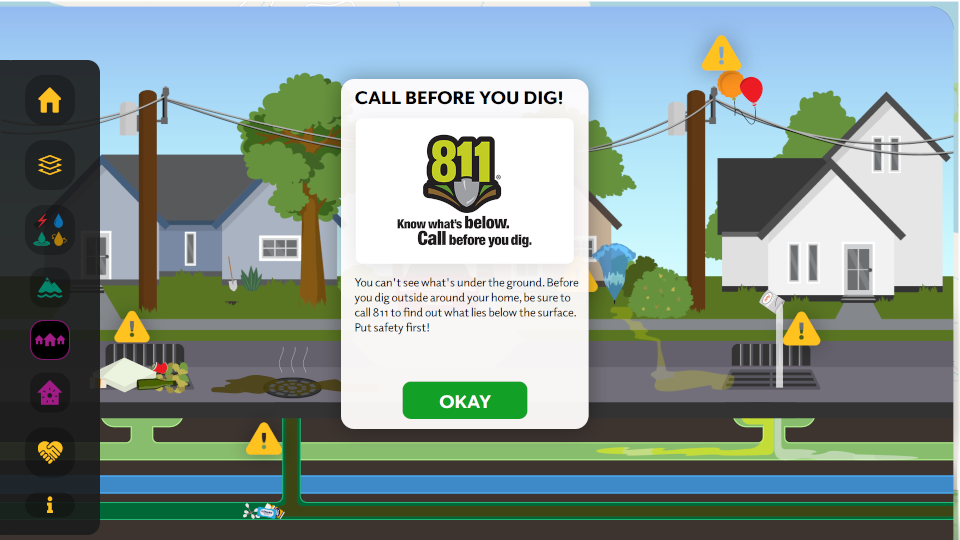
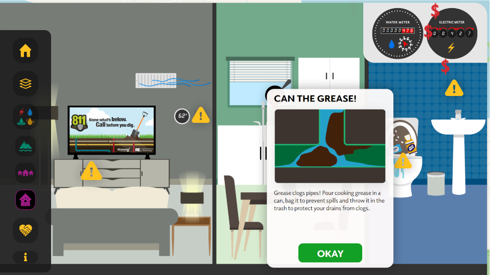
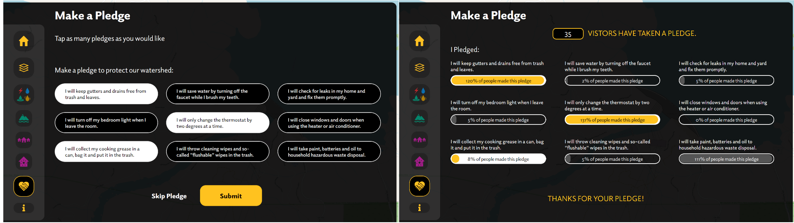

Turtle Bay Utilities Exploration

Type of Work:
- Software Development
- Interaction Design
- ARCGIS Integration
The Turtle Bay Utilities Exploration application is a 4 user station experiance for the Turtle Bay Exploration Park. This application was a joint project between the City of Redding, Turtle Bay Exploration Park and Ideum. A full portfolio peice with a video can be found on Ideums Website

The application allows visitors to explore the interconnected nature of the cities utilites on a interactive map powered by ArcGIS. The map itself displayed layers that represented the cities infastructure, some of the layers included the water pipes, sewage pipes, and above and below ground power lines.
In addition to map layers there were Media Viewers that would tie to specific geographic locations to help explain the interconnected nature of Redding's utilities.
Another exciting section was the interactive animated scenes that were designed to help educate visitors about different educational topics that were important to the utilities.
The first scene represented outdoor challenges that utilties expect residents to keep an eye out, for example calling 411 to report balloons or other obstroctions in the power lines and before digging, or large amounts of debris clogging storm drains.
The second scene represented common indoor challenges that utilties educate residents about. These included not flushing non human waste items down the toilet, not pouring grease down the drain, and some messaging about energy conservation.
The final section of the application was a pledging screen to help encourage visitors to do their part. The visitor would be able to select things that they would try to do better in the future. Once the visitor selected their pledges they would get to see what percentage of other visitors pledged. This data alongside other anonymous user flow data was stored so that Turtle Bay Exploration Park can run data driven evaluations at a later date.